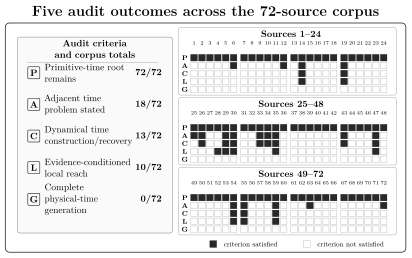

The source subsets determined by primitive-time-root and result decompositions, source-tagged primitive-time-root-dependent results and dependency relations, the cross-source decomposition of results outside audit reach, and the inclusion and result projection of cross-source primitive-time-root–result dependency relations are given, respectively, by Definition 7.52, Definition 7.59, Proposition 7.60, and Proposition 7.61.
